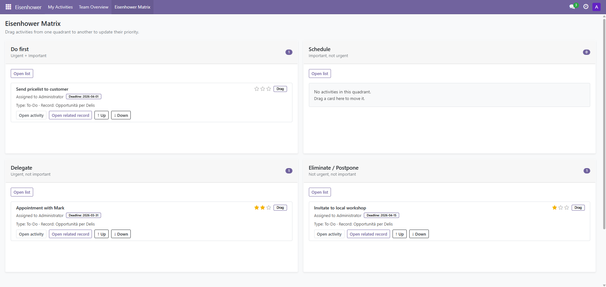
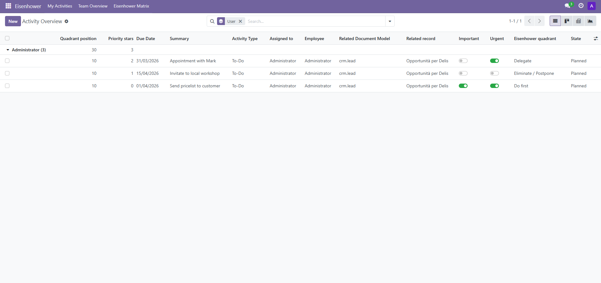

Eisenhower Matrix
Prioritize Odoo chatter activities with a visual 2x2 matrix.

Key features
- Dedicated Eisenhower matrix dashboard for
mail.activity - Drag and drop between quadrants
- Priority stars and manual ordering inside each quadrant
- Personal and team activity views
- Tree, kanban, pivot and graph analysis screens
- Related record shortcut from the matrix cards
Dependencies
- Discuss / Mail
- Employees (HR)
Supported version
Odoo 17.0
Support
Contact: info@leandigitalstudio.it
How it works
- Open the Eisenhower menu.
- Review activities in the 4 quadrants: Do first, Schedule, Delegate and Eliminate / Postpone.
- Drag a card to another quadrant to update urgency and importance.
- Use stars to fine-tune priority and the up/down buttons to reorder cards.
- Open the linked Odoo record directly from the card when needed.

Team Overview

Eisenhower Matrix